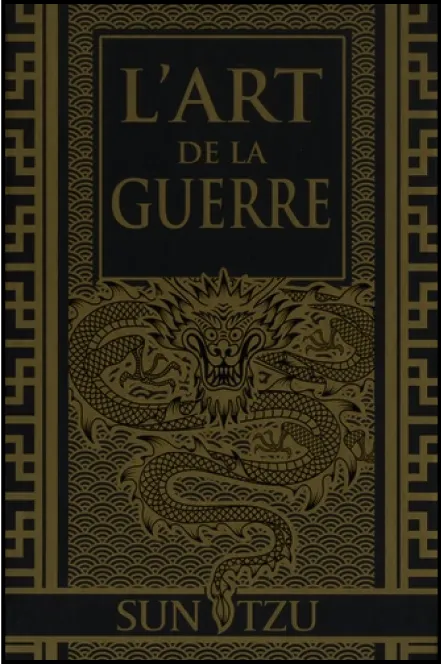
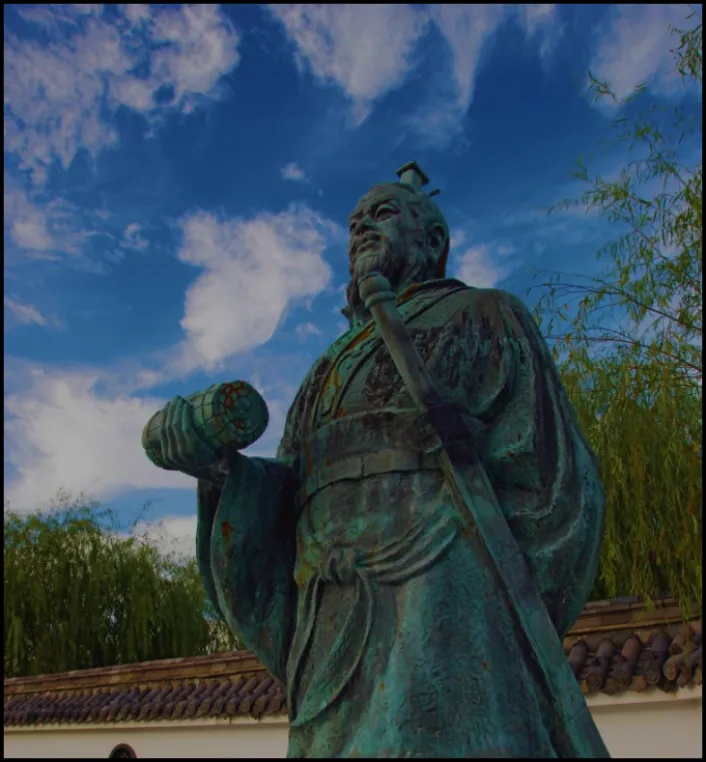

The Art of War
The Art of War.
This name is pretty creepy.
The millitary treatise on superiority.
To be able to think that a man has written a book to win.
A book with the content of solutions to bring down the enemy.
A book with the content of solutions to bring down the enemy.
It is thus more than 2000 years ago that this great man published the Art of War.
Books The Art of War
by Sun Tzu.
The five factors of domination.
A military archetype with 13 chapters.
The book begins with a
presentation of the five factors of excellence.
The first is virtue, according to him thmoral law are important.
The second is climate, it is important not to neglect nature.
The
second is climate, it is important not to neglect nature.
The third factor of superiority is the topography, the condition and size of the land.
Then the fourth value is command.
The factors influencing command
are the impartiality, humanity, and severity of the war general.
The last of the five factors is organisation.
This element is based
on the understanding of discipline, logistics and hierarchy.
Quote:
Know your opponent and above all know yourself and you will be invincible.
Sun Tzu
The philosophy of Sun Tzu.
The book is mainly about how to outwit the enemy.
The aim is to defeat the enemy without having to use brute force.
His idea is to win the war through psychology.
He uses all the means at his disposal, such as espionage and cunning.
He will put all his knowledge into his work to defeat his enemies.
Statue of General Sun Tzu.
Writing the 13 articles.
Sun Tzu was an aristocrat from the kingdom of QI which existed
530 years before the year 0.
A war broke out, so he decided to settle in the kingdom of Wu.
Secluded from the eyes of all, it was in a corner of the mountain that Sun Tzu wrote his treatise on warfare for the king.
The king did not take the book seriously because, according to him, it did not have enough practical value.
So he proposed to the king to try to enforce the
commandments.
With 180 royal servants, he formed two teams.
Two concubines of the king played
the role of captains.
Due to the lack of seriousness, the exercise was not applied
as it should have been.
Sun Tzu then had the king's concubines executed.
According to him, they were responsible for
the bad application.
The same military stratagem was executed again.
This time
he demonstrated his knowledge, and the king appointed him general.
After his promotion to the rank of general, he set out on a quest for power. He ended up taking over the western part of the CHU kingdom as well as the northern part of the Middle Kingdom.
This is how Sun Tzu's work became a reference for the whole
world.
Whether in politics, music, or even the world of cinema.
Discover:
Extract from the
13 articles